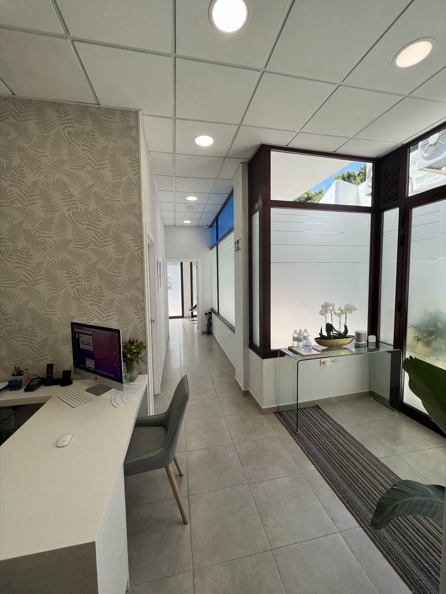
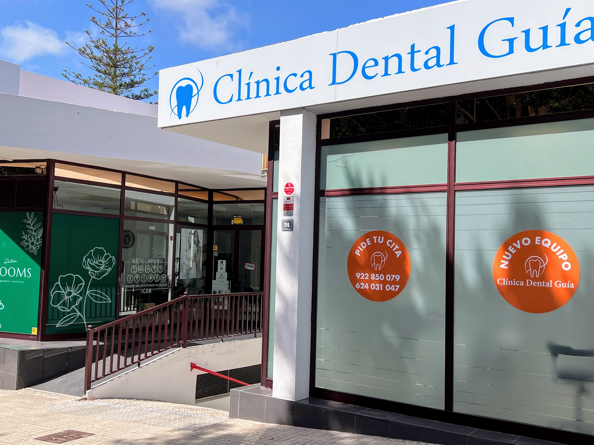
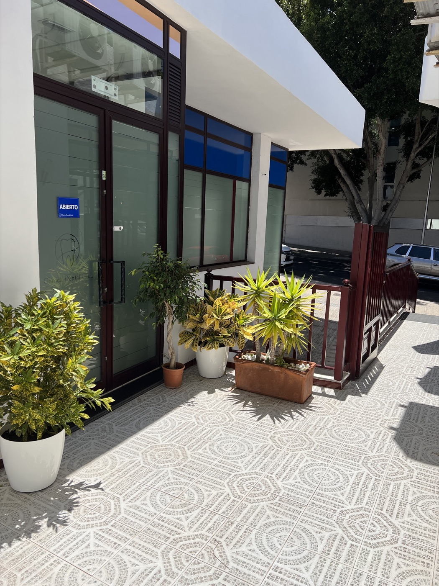
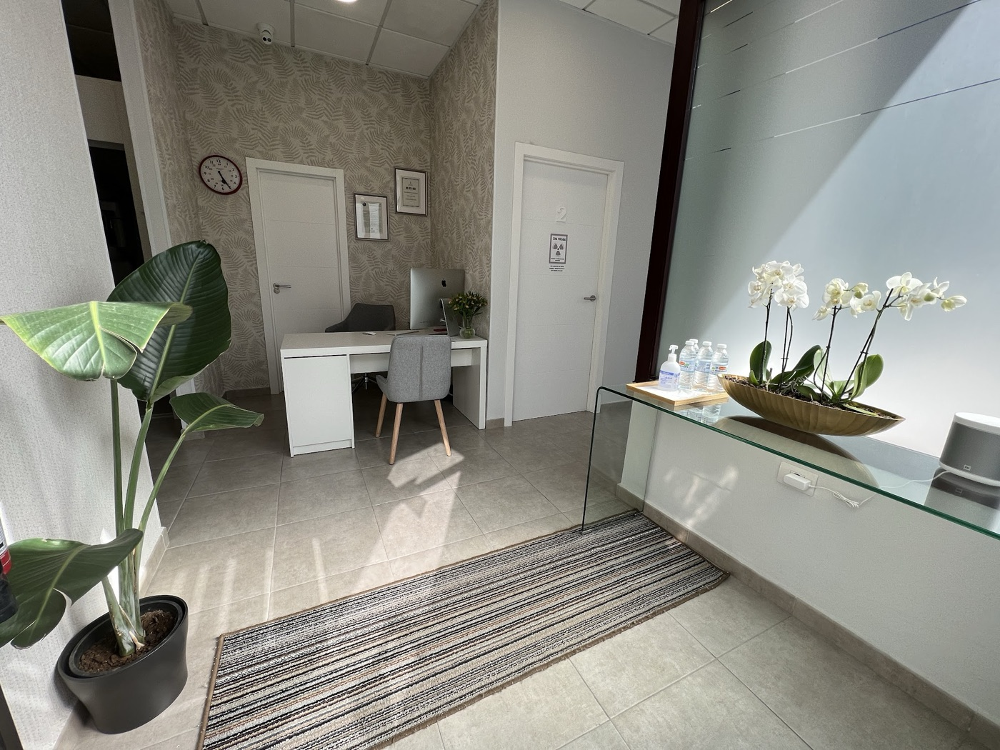
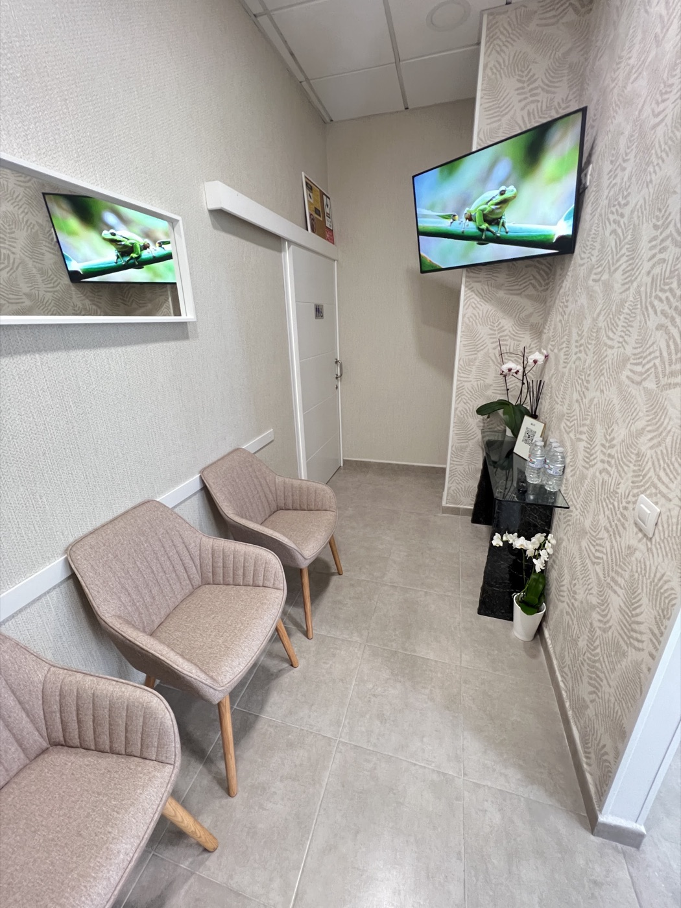
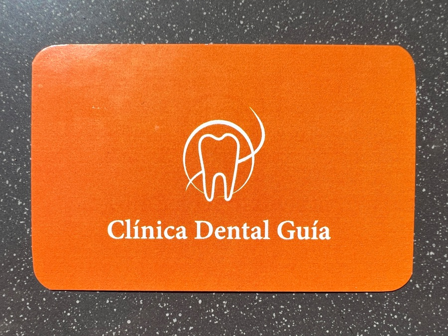

Zahnklinik in Guía de Isora
Nervös herein.
Mit allem erklärt wieder hinaus.
Allgemeine Zahnmedizin im Zentrum von Guía de Isora, mit Dr. Violeta Culev und ihrem Team.
5,073 Bewertungen bei Google01Die Praxis
Eine kleine, helle Praxis direkt an der Straße.
An der Avenida Isora, Hausnummer 74: weiße Fassade, blaues Schild und die orangefarbenen «Pide tu cita»-Kreise am Fenster. Drinnen ein Empfang mit Orchideen, Farntapete und ein ruhiges Wartezimmer.
Die Praxis leitet Dr. Violeta Culev, allgemeine Zahnmedizin. In den Bewertungen nennen Patienten die Ärztin und ihr Team beim Namen: ein gutes Zeichen dafür, wie hier gearbeitet wird.
- Neue Patienten
- Willkommen. Am besten mit Termin.
- Barrierefrei
- Eingang und WC rollstuhlgerecht.
- Ihre Sprache
- Website auf Español, English und Deutsch.

02Behandlungen
Das Wichtige, verständlich erklärt.
Preise stehen nicht online, denn jeder Mund ist anders. Vereinbaren Sie einen Termin, wir erklären es Ihnen, unverbindlich.
Kontrolle
Ein gründlicher Blick und eine klare Erklärung, bevor irgendetwas entschieden wird.
Zahnreinigung
Regelmäßige professionelle Prophylaxe, ohne Eile.
Füllungen
Wenn nötig, erklären wir jeden Schritt, bevor wir beginnen.
Ästhetische Zahnmedizin
Fragen Sie, welche Möglichkeiten es für Sie gibt. Wir besprechen sie gemeinsam.
Angst vor dem Zahnarzt?
Das ist häufiger, als man denkt. Sagen Sie es uns bei der Terminvereinbarung, wir gehen in Ihrem Tempo vor.
Termin per WhatsApp →03Bewertungen
73 Bewertungen bei Google · Alle bei Google ansehen
Was Patienten sagen
Unglaubliche Frauen. Sie sind nicht nur sehr freundlich, sondern auch großartige Profis. Es tut gut, Menschen zu finden, die ihre Arbeit mit so viel Herz und Hingabe machen.
Die Praxis ist makellos, sehr sauber und gepflegt, das gibt einem viel Vertrauen. Außerdem erklären sie alles mit viel Geduld, Freundlichkeit und Herz.
Doktorin Violeta Culev und ihre Assistentin Nazaret sind Super-Profis. […] Noch nie fühlte ich mich so relaxed beim Zahnarzt.
Sehr korrekter Umgang, effizient und sehr gute Fachfrauen. […] Doktorin Violeta, eine großartige Fachfrau. Meine Lieblingszahnklinik.
Ein absolut fantastischer Ort! Der Service war wunderbar!
Danke, Violeta, für deine Professionalität und Menschlichkeit, diese Feinfühligkeit, die man heute so selten findet. […] Danke, Giordana, für deine Fröhlichkeit und deine Ruhe.
Eine wirklich sehr gute Zahnärztin für grosse und kleine Anliegen. Ich habe das Gefühl, ihr Beruf macht ihr Freude und ich fühlte mich sehr gut aufgehoben.
Ich könnte nicht glücklicher sein, diesen Zahnarzt gefunden zu haben.
Ich kann mich nur für die Aufmerksamkeit, die Hingabe und die Professionalität bedanken […]. Danke, Ángeles, dass du mir begegnet bist und mich so gut beraten hast.
Echte Google-Bewertungen, gekürzt. Durchschnittsbewertung abgerufen am 9. Oktober 2026.
04Einblicke
So sieht es bei uns aus



05Termin & Zeiten
Termin in einer Minute
Öffnungszeiten
| Montag, Mittwoch, Freitag | 8:00 – 15:30 |
| Dienstag, Donnerstag | 11:00 – 18:30 |
| Samstag, Sonntag | Geschlossen |
Zeiten laut Google-Eintrag. An Feiertagen bitte vorher anrufen.

Fragen Sie uns 24/7
Fragen jederzeit, Termin per WhatsApp.
Ein Assistent, der die üblichen Fragen (Zeiten, Anfahrt, Preise, Angst) auch um 23 Uhr beantwortet und Sie für den Termin an WhatsApp weitergibt. Dies ist ein Beispielgespräch.
Hallo, haben Sie morgen Nachmittag geöffnet?
Dienstag und Donnerstag sind wir von 11:00 bis 18:30 da, Montag, Mittwoch und Freitag von 8:00 bis 15:30. Soll ich eine Terminanfrage vorbereiten?
Ehrlich gesagt habe ich ziemlich Angst vor dem Zahnarzt.
Das ist ganz normal. Sagen Sie es bei der Terminvereinbarung, dann geht das Team in Ihrem Tempo vor und erklärt jeden Schritt vorher.
Was kostet eine Zahnreinigung?
Die Preise hängen vom Einzelfall ab: Vereinbaren Sie einen Termin, wir erklären es Ihnen. Soll ich WhatsApp mit Ihrer Nachricht öffnen?
Nur ein Beispiel: Der echte Assistent würde mit der Website starten